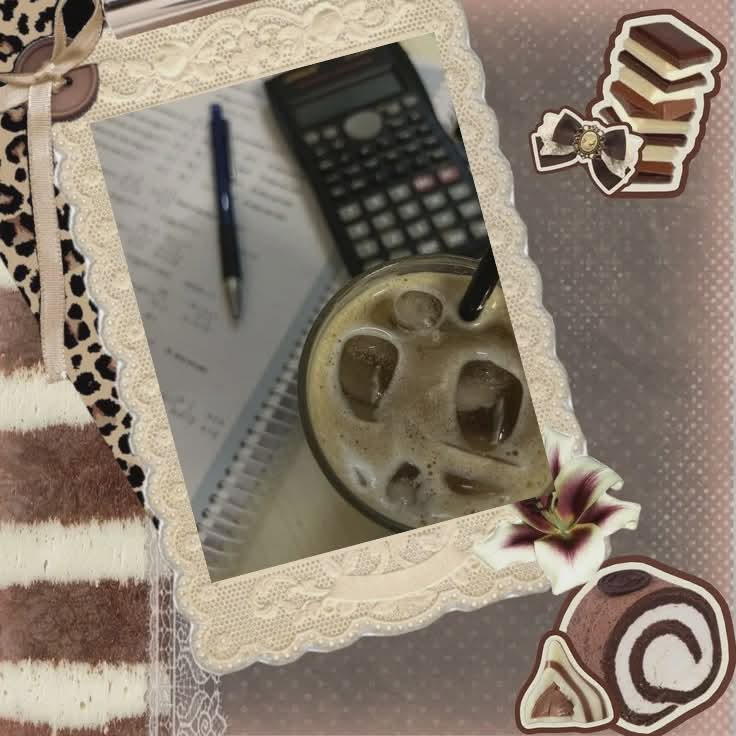
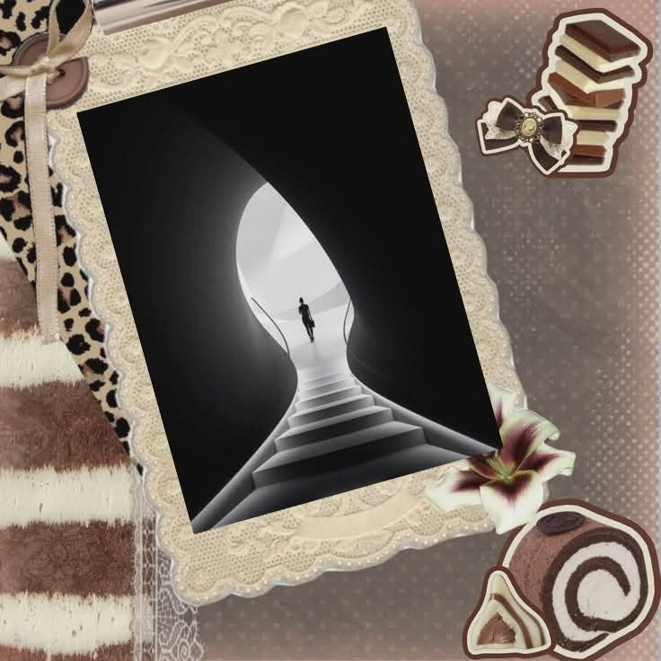

Short Term
In the near future, I want to focus on building my financial awareness and discipline. I plan to learn how to manage my money wisely by saving, budgeting, and avoiding unnecessary expenses. I also want to explore small business opportunities, even simple ones, to gain experience and understand how earning and investing work. I want to slowly build confidence in handling money and deciding wisely.

Long Term
In the long run, I see myself becoming financially stable and independent. I want to have a stable source of income and possibly own a successful business that can support my needs and my family. I don’t just want to earn money, I want to grow it through good decisions and taking opportunities. I also want to create a life where I am secure, prepared for the future, and able to enjoy the results of my hard work.
